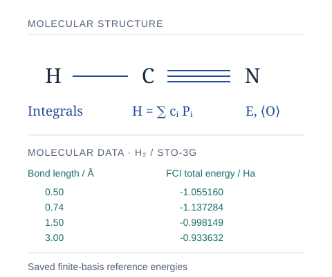

Quantum chemistryQuantum computing
Electronic structure, with independent references
Construct molecular Hamiltonians and separate solver accuracy from basis and active-space choices.
H₂: |VQE − FCI| < 1.7 × 10⁻⁹ Ha across 7 bond lengths.
Computational research · Scientific software
Scientific software and tools for molecular studies, with explicit models, independent checks, reproducible implementations and CI-tested code.
Frontier AI development and productivity tools.
Master of Quantum Computing graduate from the University of Calgary, with a background in molecular biology (Honors) and philosophy.

Quantum computing
Construct molecular Hamiltonians and separate solver accuracy from basis and active-space choices.
H₂: |VQE − FCI| < 1.7 × 10⁻⁹ Ha across 7 bond lengths.
Connect molecular data preparation, counterdiabatic control and QSVT to a measurement-based learning workflow.
1,965 labelled molecules prepared; private execution confirmed.
Use a shared Fourier core for reversible arithmetic and bounded Shor order-finding experiments.
Factors 15 with gate-built arithmetic; 21 with a compiled oracle.
Measure allocation, audit feasibility and compare local QAOA sampling with classical annealing.
Mean allocation: 72.19% of bookings; 61.29% of passengers.
Benchmark continuous-variable and analogue-spin dynamics with chronological evaluation and resource accounting.
324.3 MW RMSE: gradient boosting; ≈351.0 MW: quantum hybrids.
Life Sciences
Connect contamination estimates, principal components and reference-population assignment in Snakemake.
9 passing synthetic tests for genomic workflow components.
About
I bridge quantum computing and the life sciences, with interests in quantum chemistry, molecular learning and computational approaches to biological systems. I investigate where quantum computing can offer an advantage over classical methods.
Contact
For research and scientific-software conversations, connect through LinkedIn or explore the linked implementations.